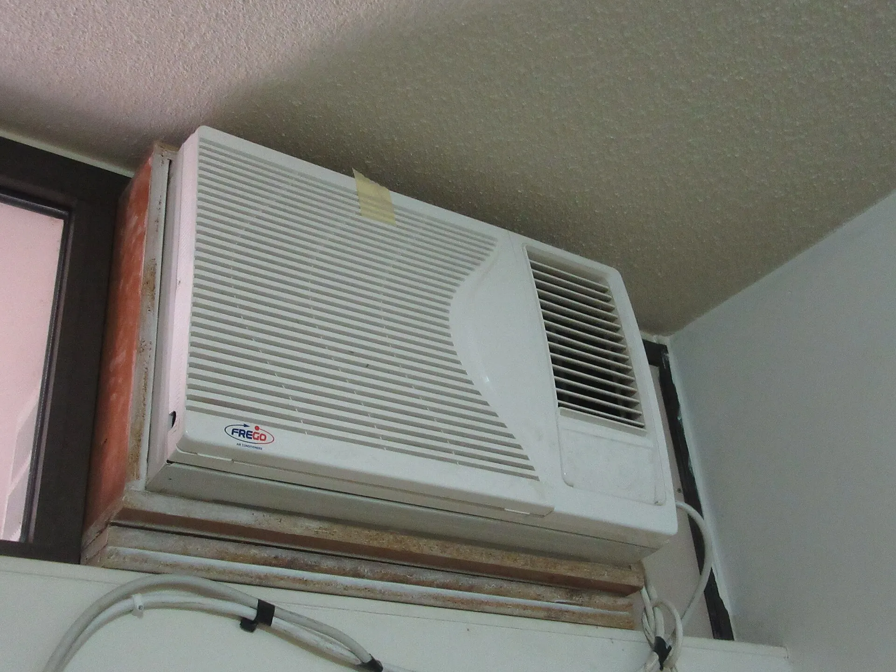
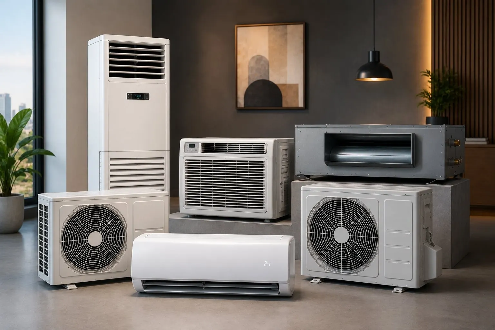
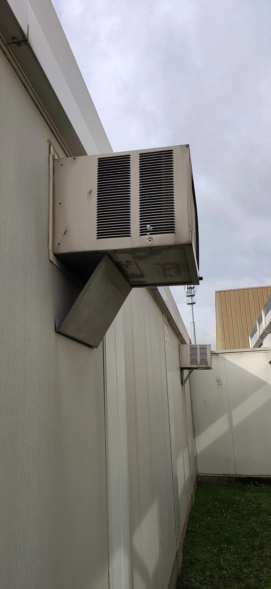
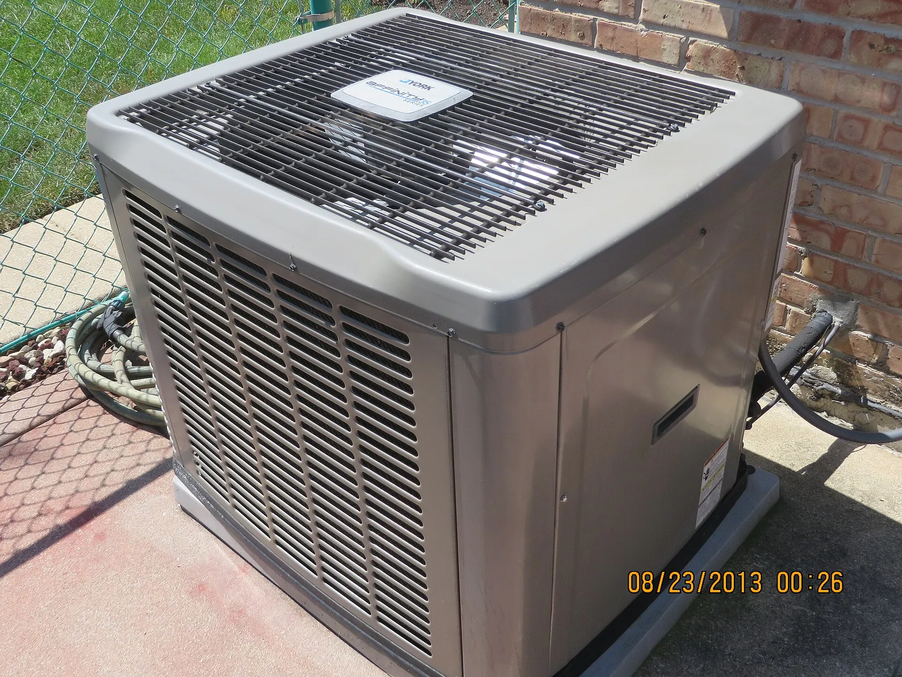
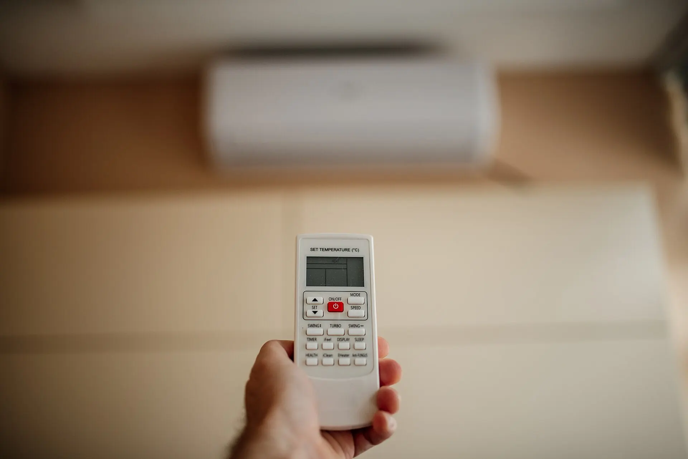

إزاي تختار مكيف سبليت مستعمل بدون مفاجآت؟
ابدأ بسعة التبريد المناسبة لمساحة الغرفة، وافحص صوت الوحدة الداخلية، قوة الهواء، ونظافة المواسير. في Fresh air بنراجع التبريد، الفريون، التسريب، والحالة الخارجية قبل عرض أي جهاز للبيع.
خدمة فورية داخل الرياض
نشتري مكيفك بسعر عادل، نوفر مكيفات مستعملة مفحوصة، وننفذ الفك والتركيب والصيانة والتنظيف باحترافية عالية وضمان واضح.
دليل Fresh air
محتوى سريع يساعد الزائر يفهم الأنواع، الفحص، والصيانة قبل ما يطلب معاينة أو يختار مكيف مناسب للمكان.

ابدأ بسعة التبريد المناسبة لمساحة الغرفة، وافحص صوت الوحدة الداخلية، قوة الهواء، ونظافة المواسير. في Fresh air بنراجع التبريد، الفريون، التسريب، والحالة الخارجية قبل عرض أي جهاز للبيع.

ضعف الهواء، رائحة غير مريحة، تسريب ماء، أو ارتفاع استهلاك الكهرباء كلها مؤشرات مهمة. التنظيف العميق للفلاتر والمبخر والمكثف يرجع كفاءة التبريد ويطول عمر الجهاز.

السبليت مناسب للغرف والصالات بهدوء وشكل أفضل، الشباك اقتصادي وسهل التركيب، والمركزي يخدم المساحات الكبيرة. الاختيار الصح يعتمد على المساحة، الميزانية، وطبيعة الاستخدام اليومي.
مقالات تكييفات مستعملة بالرياض
قبل ما تعرض مكيفك للبيع، جهز بيانات مهمة مثل نوع المكيف، السعة، العمر التقريبي، حالة التبريد، وهل يحتاج فك أو نقل. التفاصيل دي تساعد فريق Fresh air يديك تقييم أدق وسعر أوضح من أول تواصل.
أفضل وقت لبيع المكيف يكون قبل موسم الصيف أو في بداية الطلب العالي، لأن الأجهزة النظيفة والمفحوصة بتتحرك أسرع. لو المكيف شغال لكن محتاج تنظيف بسيط، المعاينة الفنية هتحدد هل التنظيف يرفع قيمته أو البيع بالحالة الحالية أفضل.
نصائح شراء المكيفات
صيانة التكييف
تنظيف الفلاتر والمبخر والمكثف بيقلل استهلاك الكهرباء، يحسن جودة الهواء، ويحافظ على قوة التبريد. الإهمال لفترة طويلة ممكن يخلي المكيف يشتغل وقت أطول عشان يوصل لنفس درجة البرودة.
خدمة داخل الرياض
لو هتنقل المكيف من بيت لبيت، أو تغير مكان الوحدة، أو تركب جهاز مستعمل جديد، الفني المختص يحافظ على النحاس والوصلات ويجرب التشغيل بعد التركيب. ده يقلل الأعطال ويحافظ على كفاءة الجهاز.
شراء مكيفات مستعملة بالرياض
تحديد سعر المكيف المستعمل مش بيكون على الاسم أو الشكل الخارجي فقط. الفريق بيبص على نوع الجهاز، السعة، عمر التشغيل، حالة الكمبروسر، قوة الهواء، نظافة الوحدة الداخلية والخارجية، وحالة النحاس والوصلات. لما تكون البيانات واضحة من البداية، التقييم بيكون أسرع والعميل يعرف هل الأفضل البيع الفوري أو الصيانة البسيطة قبل البيع.
لو عندك مكيف سبليت، شباك، أو مركزي وعايز تبيعه داخل الرياض، ابعت صورة الجهاز ومكانك ونوع الخدمة المطلوبة على واتساب. بنراجع التفاصيل ونرتب معاينة مناسبة، والهدف إن العميل يوصل لسعر عادل بدون انتظار طويل أو زيارات غير واضحة.
بيع مكيفات مستعملة مفحوصة
المكيف المستعمل الجيد لازم يكون واضح في أدائه قبل التركيب. عشان كده بنهتم بفحص التبريد، الصوت، ضغط الفريون، حالة الفلاتر، وعدم وجود تهريب ظاهر. الفحص يقلل المفاجآت ويخلي العميل يختار الجهاز المناسب للمساحة والميزانية وهو مطمئن.
لو العميل محتاج مكيف لغرفة نوم، صالة، مكتب، أو استراحة، الاختيار مش بس حسب السعر. لازم السعة تكون مناسبة للمساحة، ومكان الوحدة الخارجية يسمح بتهوية جيدة، والتركيب يتم بطريقة تحافظ على كفاءة الجهاز. وجود فني يراجع التفاصيل قبل الشراء يوفر وقت وتكلفة على المدى الطويل.
صيانة وتنظيف مكيفات بالرياض
ضعف التبريد، صوت غير معتاد، تسريب ماء، رائحة غير مريحة، أو ارتفاع استهلاك الكهرباء كلها علامات تستحق فحص سريع. التنظيف الدوري للفلاتر والمبخر والمكثف يساعد على رجوع الهواء البارد ويقلل الضغط على الجهاز، خصوصا قبل موسم الصيف في الرياض.
خدمة الصيانة المناسبة تبدأ بسؤال بسيط: هل المشكلة في التنظيف، الفريون، الكهرباء، أو التركيب؟ لما الفني يحدد السبب بدقة، الإصلاح بيكون أوضح وأسرع. تقدر ترسل تفاصيل المشكلة والحي على واتساب، ونرد عليك بخطوة مناسبة قبل الزيارة.
تواصل أسرع
اتصل مباشرة أو ابعت بياناتك على واتساب، وفريق Fresh air يرتب معاك المعاينة أو الخدمة داخل الرياض.
سنة خبرة في الرياض
مكيف تم شراؤه وبيعه
متوسط سرعة الاستجابة
رضا العملاء
هوية Fresh air
الشعار والألوان والصور كلها موجودة داخل المشروع، جاهزة للرفع والتعديل واستبدال الصور لاحقا بصوركم الحقيقية.


لماذا Fresh air؟
نعامل المكيف المستعمل كأصل له قيمة. نعاين بدقة، نوضح الحالة، ونقدم سعرا منطقيا بلا مبالغة أو مساومة مرهقة. وفي البيع نقدم أجهزة مفحوصة ومهيأة للتركيب.
تقييم حسب النوع والعمر والحالة وسعة التبريد.
فك وتركيب آمن يحافظ على النحاس والوحدة.
اختبار بعد التركيب ومتابعة عند الحاجة.
آراء العملاء
باعوا لي مكيفين سبليت بحالة ممتازة، التركيب كان مرتب والسعر واضح من البداية.
اشترو مكيفات الاستراحة في نفس اليوم، المعاينة سريعة والدفع فوري.
صيانة وتنظيف ممتاز. رجع التبريد قوي والموعد كان دقيق.
شركاء وماركات نتعامل معها